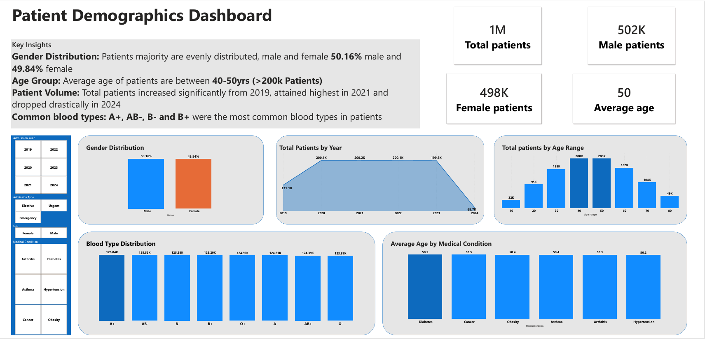
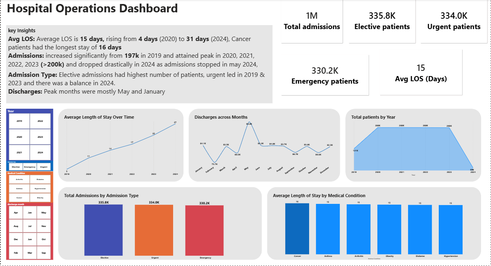
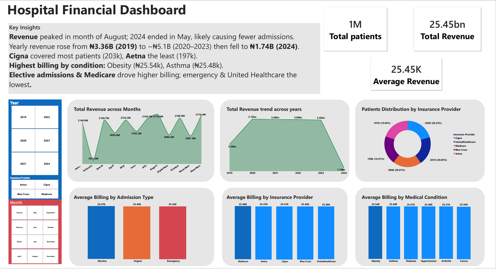
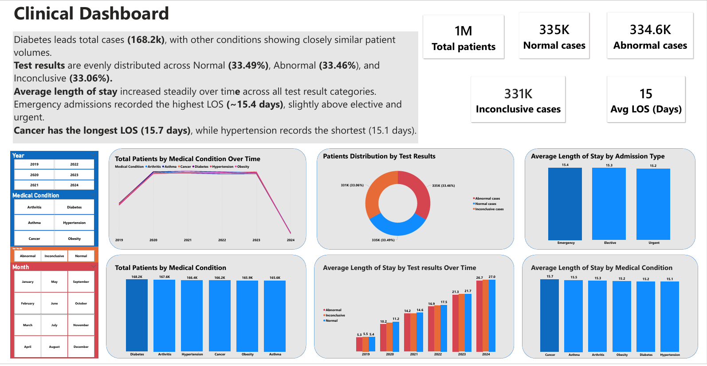
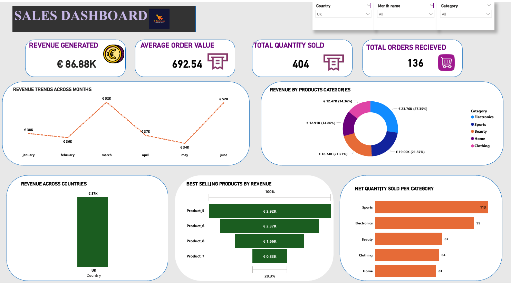

First Class Pharmacology Graduate passionate about transforming healthcare and business data into actionable insights through interactive dashboards, business intelligence, and data-driven decision-making.
A snapshot of my analytics journey.
Analytics Projects
Interactive Dashboards
Healthcare Records Analysed
Class Graduate
Healthcare meets Data Analytics
I am a First Class Pharmacology graduate with a strong passion for healthcare analytics, business intelligence and data storytelling.
I build interactive Power BI dashboards that transform raw datasets into meaningful insights, enabling organizations to make smarter, evidence-based decisions.
My background in pharmacology gives me a unique understanding of healthcare systems while my analytical skills enable me to communicate complex information through intuitive visualizations.
I am currently expanding my technical expertise in SQL and Python while continuing to develop impactful business intelligence solutions.
Analytics Projects
Professional Certifications
Interactive Dashboards
Pharmacology Graduate
B.Sc. Pharmacology
Outstanding Academic Achievement (2025)
Led academic initiatives and student engagement.
TechCrush Data Analytics Bootcamp (ACTD Accredited)
Global Health Training Centre • Score: 90%
Tools and technologies I use to transform data into actionable insights.
These projects demonstrate my ability to transform raw healthcare and business data into meaningful insights through interactive dashboards, data visualization, and business intelligence solutions.
Interactive dashboards built with Microsoft Power BI.
An end-to-end Power BI solution developed using a healthcare dataset containing over one million patient records. This project demonstrates data cleaning, modelling, DAX calculations, KPI development and interactive reporting across four analytical dashboards.
View Project on GitHub
Age distribution, gender, blood groups and patient characteristics.

Admissions, discharges and average length of stay.

Revenue, insurance providers and billing analysis.

Medical conditions, test results and clinical insights.
A business intelligence dashboard built in Power BI to analyse revenue trends, product performance, sales growth and customer purchasing behaviour. The dashboard enables organisations to monitor KPIs and make data-driven business decisions.
View Project on GitHub
Issued by: TechCrush
Accreditation: ACTD (USA)
Covered Power BI, Microsoft Excel, Power Query, DAX, Dashboard Design and Business Intelligence.
View CertificateIssued by: Global Health Training Centre
Score: 90%
International Good Clinical Practice certification covering ethical and regulatory standards for clinical research.
View CertificateAcademic background and professional development.
Novena University
Graduated with First Class Honours, building a strong scientific foundation that now complements my work in healthcare data analytics and business intelligence.
Recognized by the American Council for Training and Development
Completed practical training in Power BI, Excel, Power Query, dashboard development and business intelligence.
Completed B.Sc Pharmacology with First Class distinction.
Completed professional Data Analytics certification.
Built an end-to-end healthcare business intelligence solution.
Developed an interactive Power BI dashboard for sales analysis.
I'm always open to discussing new opportunities, collaborations and data analytics projects.
edudjetrust33@gmail.com